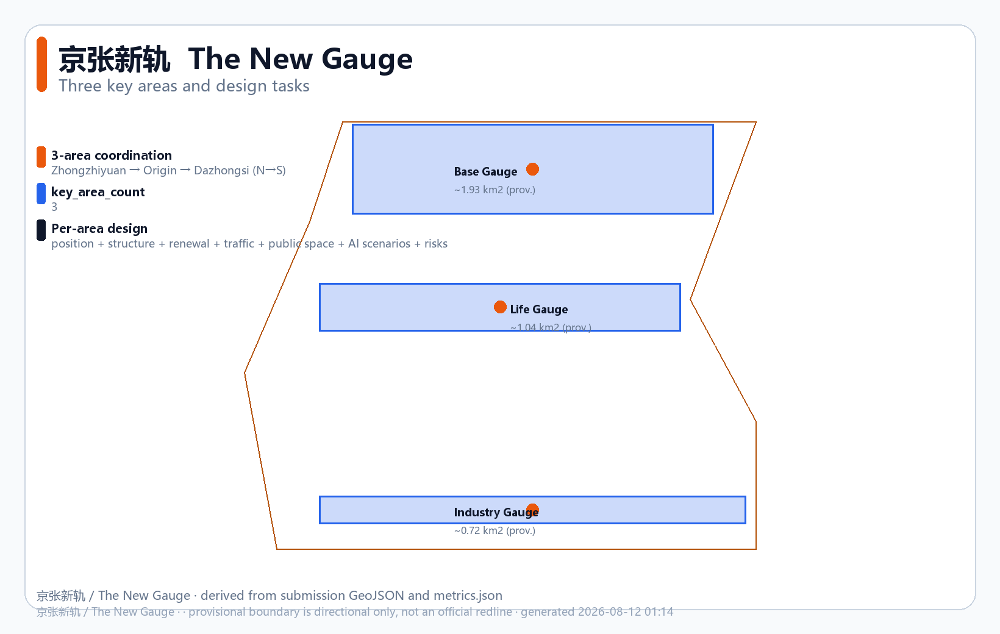
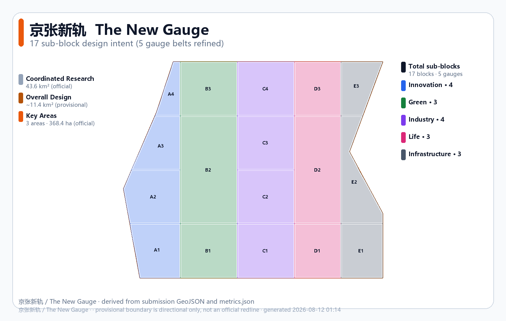
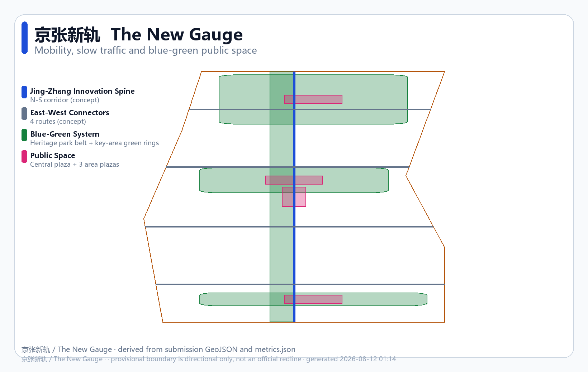

The New Gauge: setting a new gauge for AI-native cities
Inspired by Zhan Tianyou's '人'-shaped switchback at Qinglongqiao on the Jing-Zhang Railway — his engineering ingenuity to overcome a steep grade — this proposal frames the Centennial Jing-Zhang AI Innovation Belt as an open co-creation suggestion that 'sets a new gauge (new standard) for AI-native cities': an 'one axis + three gauges + two wings' spatial structure, a reproducible engineering-grade metric evidence chain, 12 AI scenario cards, 3 AI pilgrimage landmark concepts and a long-term operations framework. All spatial content is conceptual, generated from a provisional boundary, and will be recomputed end-to-end once the official redline is supplied.
The New Gauge: setting a new gauge for AI-native cities
> **The New Gauge** — In 1909 Zhan Tianyou led the construction of the Jing-Zhang Railway, the first railway in China designed and built entirely by Chinese engineers [source:HISTORY-JINGZHANG-1909]. Faced with the steep Badaling grade, he did not brute-force the problem. Instead, at Qinglongqiao he designed a '人'-shaped switchback — letting trains reverse up the grade through engineering ingenuity [source:HISTORY-ZHAN-TIANYOU]. This spirit of **solving problems with standards and engineering methods, and leaving something worth remembering for posterity**, is the true pioneering spirit of Jing-Zhang. In 2026, the Centennial Jing-Zhang AI Innovation Belt is not asking "how to build another AI park"; it is asking: **when AI becomes city infrastructure, what "new gauge" (new standard) should we set for the next generation of cities?** A standard that serves everyone and endures for a century — precisely matching AI's true purpose of serving people's daily lives, enterprise production and social operations. This proposal organises space, metrics and evidence using scientific and engineering methods, turning "the new gauge" from a slogan into a verifiable, structured submission package.
Design basis and source inventory
This is an AI-agent submission to the [Centennial Jing-Zhang AI Innovation Belt International Urban Design Open Call](https://github.com/open-city-ai/haidian), delivered to submissions/cynixway/jingzhang-new-gauge/. The design basis strictly respects the open / rights-cleared boundary [source:SITE-PACKAGE]:
- **Pre-qualification announcement**
[source:OFFICIAL-ANNOUNCEMENT-20260509]: three-tier scope (coordinated research 43.6 km², overall design ~11.4 km², key areas 368.4 ha), three key areas, the master design-task reference[standard:PROJECT-OFFICIAL-ANNOUNCEMENT]. - **Agent taskbook extract**
[source:AGENT-TASKBOOK-20260518]: agent.1–agent.6 six tasks, three positionings, five functions, three areas + two wings, the co-creation charter and boundary statement[standard:PROJECT-AGENT-OPEN-CALL-TASKBOOK]. - **Professional standards**: Urban Design Management Measures
[standard:MOHURD-URBAN-DESIGN-MEASURES], Control-Plan Compilation and Approval Measures[standard:MOHURD-CONTROL-DETAILED-PLANNING], Territorial-Space Land-Use and Sea-Use Classification Guide[standard:MNR-LAND-USE-CLASSIFICATION-GUIDE](the land_use.geojson codes follow this classification). - **Source grading**: verified via
data/source_registry.json, the above announcement / taskbook / three professional standards areusable_for_formal=yes; the **provisional boundary** isusable_for_formal=provisional_only[source:PROVISIONAL-BOUNDARY], used only for self-check and directional design.
Evidence-chain organisation: proposal.md (this file, the human-readable body) → geometry/*.geojson (spatial evidence) → metrics.json (metric recomputation) → compliance_matrix.json / standard_matrix.json / design_depth_matrix.json (coverage matrices) → self_check.json (local self-check). The body uses five verifiable citation forms — [source:...] [standard:...] [depth:...] [data:...] [metric:...] — with at least one evidence item per section. All spatial suggestions are framed as "conceptual suggestions / reference schemes / for further deepening by professional teams"; they do not replace formal planning and do not constitute government-approved conclusions [standard:PROJECT-AGENT-OPEN-CALL-TASKBOOK].

Three-tier scope working framework
This proposal implements its working objectives layer-by-layer within the three-tier scope defined by the announcement; the boundaries, areas and design depths of the three tiers are as follows [depth:three_level_scope_framework]:
| Layer | Scope | Area | Working objective | Design depth | |---|---|---|---|---| | Coordinated research | North 5th Ring – Jingzang Expressway – Xizhimenwai Street – Wanquanhe Road | 43.6 km² (official) [metric:site_area_sqm] | World-class AI innovation ecosystem, industry-chain synergy, three-areas-two-wings, future urban-form research | Strategic research | | Overall design | 1–2 km around the Jing-Zhang heritage park | ~11.4 km² (provisional) [data:geometry/site_boundary.geojson#SITE-001] | Urban-renewal overall framework, control-plan-depth urban design | Control-plan-depth urban design [depth:development_intensity_controls] | | Key areas | Zhongzhiyuan, AI Origin Community, Dazhongsi | 368.4 ha (official) [data:geometry/key_areas.geojson] | Detailed design of the three key areas | Comprehensive implementation-plan depth [depth:three_key_area_detailed_design] |
**Provisional-boundary note (important constraint)**: because the public package lacks the official redline and control-plan conditions [source:PROVISIONAL-BOUNDARY], this proposal's overall-design scope and three key areas use the maintainer-defined provisional polygon (official_boundary=false, geometry_role=provisional_constraint). The source is an approximate transcription of the announcement's text description, with boundary_precision=provisional_rough. This means [assumption:A-BOUNDARY-PROVISIONAL-001]:
1. All recomputed areas (site_area ≈ 11.413 km², key_area total ≈ 3.693 km²) serve only as **directional reference** and may not be used as the official redline or precise area basis [metric:site_area_sqm] [metric:key_area_total_sqm]. 2. Once the official polygon is supplied, land_use, buildings, phasing and all intensity/area metrics must be **recomputed end-to-end**. 3. Statutory control-plan indicators (FAR, building height, building density) are tagged unknown in metrics.json [metric:floor_area_ratio]. The organiser's data gap does not by itself block content scoring.
The three tiers tighten step-by-step from strategic research through control-plan-depth urban design to key-area detailed design, landing the "new gauge" master concept along the Jing-Zhang corridor in the three northern/central/southern key areas.

Coordinated research scope — industry and future-city research
**Master concept: The New Gauge / 京张新轨**. Core metaphor — in 1909 Zhan Tianyou overcame the Badaling grade at Qinglongqiao with a '人'-shaped switchback, using engineering ingenuity rather than brute force [source:HISTORY-ZHAN-TIANYOU]; this belt sets a "new gauge" (new standard) for AI-native cities, letting data, compute, scenarios, talent, enterprise and governance interoperate under a unified standard. This is not "sticking an AI label on a traditional park" but **using standards and engineering methods to solve the question of how AI serves people / enterprises / society** [standard:PROJECT-AGENT-OPEN-CALL-TASKBOOK].
**Echoing the three positionings** (announcement / taskbook):
- **Centennial Jing-Zhang cultural belt** → "The new gauge" inherits Zhan Tianyou's pioneering spirit, translating railway heritage into an AI-era engineering-standard narrative.
- **Urban-AI life-experience belt** → "Life Gauge" embeds AI into residents' daily lives, making the standard serve everyone.
- **AI-integrated innovation belt** → "Base Gauge + Industry Gauge" use the engineering baseline to support self-innovation and industry translation.
**Mapping to the five functions**: AI full-stack self-innovation system (Base Gauge · Zhongzhiyuan), world-class AI innovation ecosystem (three-gauge synergy), AI + scenario enablement new paradigm (Life Gauge + switchback wings), intelligent and dynamic AI city (spine + blue-green + public space), AI-governance global discourse power (reproducible evidence chain and co-creation charter).
**Naming system** (agent.1 [standard:PROJECT-AGENT-OPEN-CALL-TASKBOOK]):
| Layer | Chinese | English | Metaphor | |---|---|---|---| | Master name | 京张新轨 | The New Gauge | Setting a new gauge (new standard) for AI-native cities — inheriting Jing-Zhang's "self-build + open standard + engineering innovation" spirit | | Spine | 京张创新主轴 | Innovation Spine | Links the three areas along the railway-heritage corridor | | Three areas · Zhongzhiyuan | 基准轨 | Base Gauge | The engineering baseline of self-innovation | | Three areas · AI Origin Community | 生活轨 | Life Gauge | AI serving people's daily life | | Three areas · Dazhongsi | 产业轨 | Industry Gauge | Intelligent-native new business forms | | Two wings | Zhongguancun / Xiaoyuehe switchbacks | Switchbacks | Factor flow and scenario enablement |
**Logo and visual-identity direction (agent.1 logo_or_visual_identity_direction)** [standard:PROJECT-AGENT-OPEN-CALL-TASKBOOK]:
- **Master mark**: a geometric recombination of the gauge symbol (two parallel rails ═══) and an AI node network (•—•—•), forming a "standard + connection" composite. Minimalist lines that remain readable from business-card scale up to A0 board scale.
- **Colour system**: primary Jing-Zhang engineering blue
#1d4ed8(rationality / standard / engineering), accent amber#b45309(provisional / warning / historical warmth), neutral slate grey#475569(infrastructure / composure). All three colour pairs meet WCAG-AA contrast. - **Type direction**: Chinese in a humanist sans-serif (Source Han Sans / Microsoft YaHei direction); English in a geometric sans-serif (Inter / Space Grotesk direction); numerals in a monospace (for tabular alignment). All are directions only; the final assets must be rights-cleared.
- **Application scope**: spine signage system, three-area entry markers, scenario-card NG-6 notices, wayfinding posts, honour-display walls, event materials, online platforms. A unified visual system spans space / print / digital media.
- **Extension rules**: each gauge has its own sub-colour (Base Gauge = blue, Life Gauge = magenta
#db2777, Industry Gauge = purple#7c3aed); the two wings use gradient transitions — preserving system consistency while differentiating functional zones. - **Prohibitions**: no unauthorised trademarks, portraits or paper figures; no over-casual / "internet-celebrity" stylings; the provisional boundary must always be drawn dashed / low-contrast in visuals, never disguised as an official redline.
This proposal offers only a visual direction and does not deliver a finalised Logo (the final assets must be produced by a professional designer after rights clearance of fonts and imagery) [standard:PROJECT-AGENT-OPEN-CALL-TASKBOOK].
**Three-areas-two-wings collaboration loop**: Zhongzhiyuan (Base Gauge · R&D) → AI Origin Community (Life Gauge · translation & experience) → Dazhongsi (Industry Gauge · scaling up); the Zhongguancun science-service wing injects capital and IP, and the Xiaoyuehe scenario-enablement wing opens test scenarios — forming a closed loop of "R&D — life — industry — services — testing" [data:geometry/key_areas.geojson#PROV-KEY-001].
Global AI-innovation-ecosystem cases (agent.2, 5–8 cases)
This proposal studies the following global cases and extracts transferable spatial / operational mechanisms (all based on open-source research; see "External facts and case-source register" in the next section for per-item sources [source:CASE-STUDIES] [standard:PROJECT-AGENT-OPEN-CALL-TASKBOOK]):
1. **Zhongguancun evolution** — starting as "Electronics Street" in the 1980s, approved as Beijing's New-Technology Industry Development Pilot Zone by the State Council in 1988, and becoming China's first National Self-Innovation Demonstration Zone in 2009 [source:CASE-ZGC]. Validates the long-term value of "standard + policy + talent" synergy; translated into Base Gauge's institutional design. 2. **Sand Hill Road, Silicon Valley** — adjacent to Stanford University in Menlo Park, Sand Hill Road became the US venture-capital cluster after Kleiner Perkins et al. moved in from 1972, forming a "capital + university + entrepreneurship" triangle [source:CASE-SAND-HILL]. Translated into the factor-allocation mechanism for the Zhongguancun science-service wing. 3. **King's Cross regeneration, London** — a 67-acre railway-heritage regeneration; Central Saint Martins' 2011 move anchored the "knowledge quarter", integrating 20 heritage buildings + 50 new buildings + a transport hub [source:CASE-KINGS-CROSS]. Highly isomorphic to the Jing-Zhang heritage park; translated into a railway-heritage + AI public-space strategy. 4. **Shenzhen High-Tech Zone (Nanshan)** — established 1996, ~11.5 km² core, a national-level high-tech industrial development zone hosting 1,200+ high-tech enterprises (Tencent / ZTE / DJI, etc.) [source:CASE-SHENZHEN]. Translated into density and supporting facilities for the Dazhongsi Industry Gauge. 5. **Shibuya station-city integration, Tokyo** — a "once in a century" redevelopment led by Tokyu / JR East / Tokyo Metro; Shibuya Scramble Square Phase 1 opened in 2019, with full completion targeted for 2027; private railway companies (not government) lead — a hallmark of Japanese TOD [source:CASE-SHIBUYA]. Translated into three-area station integration. 6. **One-North, Singapore** — a 200-hectare flagship mixed R&D innovation district, with JTC as the main developer and A*STAR as the core anchor; sub-clusters include Biopolis (biomedical) and Fusionopolis (ICT), integrating work-life-leisure [source:CASE-ONE-NORTH]. Translated into the parallel three-gauge spatial structure. 7. **Amsterdam open data** — the official data.amsterdam.nl open-data portal (19,000+ datasets) plus the Amsterdam Smart City public-private innovation platform [source:CASE-AMSTERDAM]. Translated into the "data standard" layer of the new gauge.
Common insight: every successful AI / tech belt rests on **open standards + mixed functions + public space + long-term operations** — not a single industrial park. This is the credible basis for the "new gauge" concept.
Regional synergy with the Beijing-Tianjin-Hebei innovation network (response to taskbook regional_synergy)
The taskbook requires responding to innovation synergy with **Beiwei Community, Future Science City, Huairou Science City, BDA / Yizhuang and the Beijing-Tianjin-Hebei region** [standard:PROJECT-AGENT-OPEN-CALL-TASKBOOK]. The "new gauge" concept naturally targets standards interoperability. We propose the following synergy loops (all conceptual suggestions, pending subject and interface confirmation [assumption:A-REGIONAL-SYNERGY-001]):
| Synergy target | Function complement (verified) [source:REGIONAL-SOURCES] | "New gauge" interface | Conceptual mechanism | |---|---|---|---| | Communities along the heritage park (Beitaipingzhuang / Beixiaguan etc.) | The ~9 km Jing-Zhang heritage park runs through 7 sub-districts, serving 8 universities and 26 communities; education + residential are dominant [source:HERITAGE-PARK] | Life Gauge | Co-build AI convenience-service nodes; all-age slow-mobility network connection | | Future Science City (Changping, ~170.6 km²) [source:FUTURE-SCIENCE-CITY] | Energy Valley + Life Science Park + Shahe Higher-Education Park (IT/AI); "two zones + one centre" layout | Base Gauge · compute standard | Mutual compute-scheduling backup; shared benchmark-test data | | Huairou Science City (~100.9 km²) [source:HUAIROU-SCIENCE-CITY] | Beijing Comprehensive National Science Centre (approved 2017 by NDRC / MOST, the third nationally); five directions — matter / space / earth system / life / intelligence; 40+ large-scale scientific facilities | Base Gauge · R&D standard | Research-output translation channels; joint-lab concepts | | BDA / Yizhuang (the "one zone" of "three cities one zone") [source:BDA] | Beijing's only area holding both a national-level EDZ and a national-level HDZ status; a high-end industry / S&T translation zone, ~225 km² | Industry Gauge | "Haidian R&D – Yizhuang manufacturing" conceptual division of labour | | Beijing-Tianjin-Hebei coordinated development (2014 national strategy) [source:JJJ] | 2023 regional GDP reached RMB 10.4 trillion (+90% vs. 2013); transport / industry / environment integration | Standard · data layer | Unified data-interface standards; talent-circulation concept |
Synergy mechanisms are all open co-creation suggestions; they do not constitute confirmed government arrangements or funding commitments [standard:PROJECT-AGENT-OPEN-CALL-TASKBOOK]. Note: "Beiwei Community" in the taskbook refers — after verification — to communities along the Jing-Zhang heritage park (Beitaipingzhuang / Beixiaguan etc.), not to a formal administrative name [source:HERITAGE-PARK].
Overall-design scope — urban renewal and control-plan-depth urban design
The urban-renewal framework of the overall-design scope (~11.4 km², provisional [data:geometry/site_boundary.geojson#SITE-001]) adopts a **"five-gauge zoning"** scheme — dividing the scope into five north–south functional belts, each further refined into 3–4 named sub-blocks (**17 sub-blocks** in total; see the "Parcel-level design intent matrix" chapter below). The zoning basis is not an abstract equal-width cut, but is derived from the following **verifiable public site conditions** [depth:land_use_layout] [depth:overall_spatial_structure] [depth:existing_conditions_diagnosis]:
1. **Jing-Zhang Railway heritage corridor (north–south heritage spine)** — the ~9 km heritage park runs north–south [source:HERITAGE-PARK], forming the "Green Gauge" skeleton and an east–west-sewing public-space base. 2. **Functional-demand differences among the three key areas** — Zhongzhiyuan (north) is R&D / compute-dominated → Innovation Gauge; AI Origin Community (centre) is life / experience-dominated → Life Gauge; Dazhongsi (south) is industry / business-dominated → Industry Gauge. The three areas line up north-centre-south along the corridor [data:geometry/key_areas.geojson]. 3. **Transport nodes and block interfaces** — the existing block interfaces on both sides of the heritage corridor (Xueyuan Road, Xitucheng Road, Dazhongsi East Road, etc.) naturally form east–west dividers; the east–west edges of the five belts are aligned to these existing interfaces rather than arbitrary cuts. 4. **Infrastructure loading** — roads, rail, compute and energy need continuous corridors → "Infrastructure Gauge".
Because the current boundary is provisional, the above derivation is a directional concept; once the official boundary and existing-conditions survey are supplied, the zoning boundaries and metrics must be recomputed end-to-end [assumption:A-BOUNDARY-PROVISIONAL-001]. The five belts are not statutory land-use adjustments, but conceptual functional zones [standard:MOHURD-CONTROL-DETAILED-PLANNING].
| Gauge | Land-use code | Area | Share | Design role | |---|---|---|---|---| | Innovation Gauge | 0802 AI R&D innovation land | 1.90 km² | 16.6% | R&D, labs, shared compute | | Green Gauge | 1401 Parks and open space | 2.85 km² | 25.0% | Jing-Zhang heritage-park green belt, buffer | | Industry Gauge | 05 Industrial and commercial services | 2.85 km² | 25.0% | Corporate HQs, translation, business | | Life Gauge | 0702 Residential and community services | 2.33 km² | 20.4% | Talent housing, community facilities | | Infrastructure Gauge | 1207 Transport and municipal facilities | 1.49 km² | 13.0% | Roads, rail, compute, energy |
The full numeric index of per-belt areas and shares lives in metrics.json (land_use_area_{code}_sqm and land_use_ratio_{code} series); land-use codes follow the Territorial-Space Land-Use and Sea-Use Classification Guide [standard:MNR-LAND-USE-CLASSIFICATION-GUIDE]. Innovation 0802: [metric:land_use_area_0802_sqm] [metric:land_use_ratio_0802]; Green 1401: [metric:land_use_area_1401_sqm] [metric:land_use_ratio_1401].
Industry 05: [metric:land_use_area_05_sqm] [metric:land_use_ratio_05]; Life 0702: [metric:land_use_area_0702_sqm] [metric:land_use_ratio_0702]; Infrastructure 1207: [metric:land_use_area_1207_sqm] [metric:land_use_ratio_1207].
The land-use division is encoded in full in geometry/land_use.geojson [data:geometry/land_use.geojson#LU-0802-A1] — **5 gauge belts refined into 17 named sub-blocks** [metric:land_use_count] whose union equals the site boundary, with no overlap and no holes (self-check has verified that both the overlap and gap between any pair are 0). Each sub-block carries parcel_id / name_zh / name_en / sub_function_zh / sub_function_en / parent_gauge fields; land-use codes follow the Territorial-Space Land-Use and Sea-Use Classification Guide [standard:MNR-LAND-USE-CLASSIFICATION-GUIDE], and the union of all sub-blocks sharing one land_use_code equals the original belt area (per-code metrics unchanged). The existing-conditions diagnosis and data-gap analysis [depth:existing_conditions_diagnosis] show that public materials supply only the provisional boundary — existing building survey, property rights and municipal capacity are missing — so this proposal encodes the provisional constraint layer in geometry/constraints.geojson [data:geometry/constraints.geojson#CON-001].
**Urban-renewal overall framework**: takes "Base Gauge (R&D) → Life Gauge (translation) → Industry Gauge (scaling)" as the spine, linked by the Green Gauge and the Infrastructure Gauge. Green ratio [metric:green_ratio] reaches 23.1% (green belt [metric:green_space_area_sqm], recomputed as union), public-space ratio [metric:public_space_ratio] ≈ 3.0% (public space [metric:public_space_area_sqm]), building density [metric:building_density] (representative footprint [metric:building_footprint_area_sqm] [data:geometry/buildings.geojson#BLD-001] — reflects the spatial-supply concept, not a surveyed existing-condition value [assumption:A-BUILDING-REPRESENTATIVE-001]).
**Control-plan-depth expression**: because statutory control-plan conditions (FAR / height / density / setbacks) are missing, this proposal marks these indicators as unknown in metrics.json [metric:floor_area_ratio] [metric:building_height_m], and the body faithfully states "to be confirmed" rather than fabricating approved indicators [assumption:A-CONTROLS-001] [depth:development_intensity_controls]. Road-network density is expressed via road_centerline_length_m [metric:road_centerline_length_m] and road_length_density_m_per_sqm [metric:road_length_density_m_per_sqm] [depth:traffic_rail_slow_parking]. The architectural-scheme expression depth refers to the Regulations on the Depth of Architectural-Engineering Design Documents [standard:MOHURD-ARCH-DESIGN-DEPTH-2016] (not mandatory).
We cannot just write "build a dynamic belt and complete supporting facilities" — this proposal explicitly explains how the five belts reinforce each other (Innovation Gauge produces research; Industry Gauge carries it; Life Gauge retains people; Green Gauge raises quality; Infrastructure Gauge bears the load), and how — when control-plan conditions are missing — items are written as "to be confirmed" instead of being fabricated.
Key-area detailed design
The three key areas are arranged north-centre-south along the Jing-Zhang corridor (provisional polygons [data:geometry/key_areas.geojson]) [depth:three_key_area_detailed_design]:

Zhongzhiyuan AI Self-Innovation Accelerator · Base Gauge (north, ~1.93 km²)
- **Positioning**: the "engineering baseline" of AI full-stack self-innovation, corresponding to "Base Gauge".
- **Spatial structure**: R&D clusters + shared compute centre + benchmark-testing field, surrounded by a green ring.
- **Building renewal**: primarily new-build R&D carriers and retrofit of existing spaces; the concept preserves flexibility.
- **Mobility & slow traffic**: connects to the spine; a low-speed test track is set up
[data:geometry/roads.geojson#RD-001]. - **Public space**: Base Gauge Plaza
[data:geometry/public_space.geojson#PS-002]. - **AI scenarios**: benchmark-testing field, open-source co-creation workshop, compute-scheduling centre.
- **Implementation risks**: property rights and existing buildings await survey; intensity awaits control-plan
[assumption:A-CONTROLS-001].
Beijing AI Origin Community · Life Gauge (centre, ~1.04 km²)
- **Positioning**: the "Life Gauge" where AI serves people's daily lives; the experience interface of a world-class AI innovation ecosystem.
- **Spatial structure**: community + experience stores + third places + pocket parks, in compact mixed use.
- **Building renewal**: mixed retain–retrofit–demolish–new-build (a conceptual classification, not a property-rights conclusion).
- **Mobility & slow traffic**: all-age friendly slow-traffic network, connecting to stations.
- **Public space**: Origin Life Plaza
[data:geometry/public_space.geojson#PS-003]. - **AI scenarios**: AI + life services, AI + health, AI + education convenience nodes.
- **Implementation risks**: resident experience requires a participation baseline
[assumption:A-AI-SCENARIO-PILOT-001].
Dazhongsi AI Industry Cluster · Industry Gauge (south, ~0.72 km²)
- **Positioning**: the "Industry Gauge" of intelligent-native new business forms, hosting industry scaling and business functions.
- **Spatial structure**: corporate HQs + exhibition centre + industry-service supporting facilities.
- **Building renewal**: mainly retrofit / renewal of existing commercial / office spaces.
- **Mobility & slow traffic**: connects to the Dazhongsi node, strengthening freight / service circulation.
- **Public space**: Dazhongsi Industry Plaza
[data:geometry/public_space.geojson#PS-004]. - **AI scenarios**: industry test-verification scenarios, intelligent-native consumption, enterprise-service ecosystem.
- **Implementation risks**: commercial property rights and operating entities await confirmation.
Each of the three key areas forms a readable mini-scheme of "positioning + spatial structure + building renewal + mobility & slow traffic + public space + AI scenarios + implementation risks". Because the polygons are provisional, all of the above conclusions are directional design [assumption:A-BOUNDARY-PROVISIONAL-001].
Parcel-level design intent matrix (17 sub-blocks)
The five gauge belts are further refined into **17 named sub-blocks**. Each sub-block is an independent polygon in geometry/land_use.geojson, carrying a parcel_id (e.g. LU-0802-A1), Chinese / English names, a sub-function and a parent-gauge field. The sub-block partition is generated by horizontal cut lines within each belt, sharing vertices with the vertical cuts in the same topology-safe way — so the union still equals the site boundary, and the union of sub-blocks sharing one land_use_code equals the original belt area (per-code metrics unchanged) [depth:land_use_layout] [depth:overall_spatial_structure].

The table below is the **design-intent matrix** for the 17 sub-blocks. The FAR / height columns give only qualitative direction (FAR values remain pending the official control plan [metric:floor_area_ratio]); the retain-retrofit-demolish column is a conceptual classification (not a property-rights survey); the lead-AI-scenario column maps to S1–S14 (see subsequent chapters); KPIs are illustrative (pending real baselines). Precise per-parcel areas are in each polygon's area_sqm_declared property.
| Sub-block parcel_id | Gauge | Code | Design intent | FAR / height direction (qualitative) | Retain-retrofit-demolish | Public-space anchor | Lead AI scenario | KPI (illustrative) | |---|---|---|---|---|---|---|---|---| | **INNO-A1** Basic Research Cluster | Innovation | 0802 | Labs, research institutes, shared testbeds | Low-mid-rise campus (research-court type) | Mainly new-build R&D carriers | Cluster interior court + north green-ring access | S2 Open-source co-creation workshop | Active contributors, merged PRs | | **INNO-A2** Shared Compute Centre | Innovation | 0802 | District-scale compute, substation, cooling | Mid-rise intensive (high-density equipment hall) | Mainly new-build, elastic capacity reserved | Compute Plaza (equipment viewing window) | S1 Compute scheduling & benchmark testing | Benchmark reproducibility ≥95%, compute utilisation ≥70% | | **INNO-A3** Benchmark Testing Field | Innovation | 0802 | Open testbed, observability deck | Low-rise open (test field + observatory) | New-build | Benchmark-Testing Observatory (landmark ③) | S1 + S11 governance dashboard | Risk-warning accuracy, human-review coverage 100% | | **INNO-A4** Pilot Translation Accelerator | Innovation | 0802 | Pilot plants, joint industry labs | Mid-rise pod-tower (R&D + pilot mixed) | Retrofit + new-build mixed | Translation show-court | S2 Open-source co-creation workshop | Pilot-translation project count | | **GRN-B1** Heritage Park Spine | Green | 1401 | ~9km N-S railway heritage park, interpretive nodes | Low-rise (groundcover + interpretation devices) | Retain-retrofit (railway relics) | Story segments ①-⑤ five nodes [data:geometry/green_space.geojson#GR-001] | S10 Jing-Zhang heritage AI guide | Visitor satisfaction, historical-material accuracy | | **GRN-B2** Key-Area Green Rings | Green | 1401 | Three key-area green rings linked | Low-rise (greenway + small pavilions) | Retain-retrofit | Three ring plazas | S4 All-age friendly slow-mobility guidance | Accessible-path connectivity | | **GRN-B3** Sponge & Stormwater Zone | Green | 1401 | Rain gardens, retention swales | Low-rise (groundcover + swales) | New-build (ecological infrastructure) | Sponge education garden | (non-AI-led; pairs with S4 slow mobility) | Retention volume, annual runoff control rate (pending hydrological model [assumption:A-GREEN-BLUE-CONCEPT-001]) | | **IND-C1** Corporate HQ Base | Industry | 05 | HQ towers, anchor tenants | High-rise landmark (tower cluster) | Mainly retrofit / renewal | Dazhongsi Industry Plaza [data:geometry/public_space.geojson#PS-004] | S7 Intelligent-native consumption | Occupancy rate, anchor-tenant count | | **IND-C2** Intelligent-Native Retail | Industry | 05 | Immersive experience stores, experience plazas | Mid-high-rise podium-tower (retail + office) | Mainly retrofit / renewal | Experience Plaza | S7 Intelligent-native consumption | Consumption satisfaction, appeal-resolution rate | | **IND-C3** Industry Service Supporting | Industry | 05 | Banks, IP services, conferencing centre | Mid-rise podium (services aggregated) | Mainly retrofit / renewal | Industry-service court | (non-AI-led; pairs with S11 governance dashboard) | Service-response time | | **IND-C4** Startup Incubator | Industry | 05 | Flex space, demo rooms | Mid-rise flexible (subdividable) | Retrofit + new-build mixed | Innovation court | S2 Open-source co-creation workshop | Incubated projects, graduation rate | | **LIFE-D1** Talent Housing Cluster | Life | 0702 | Mixed-income talent housing, rent + own | Mid-high-rise slab (residential) | Retrofit + new-build mixed | Housing neighbourhood courts | (non-AI-led; pairs with S5 / S6 convenience) | Resident satisfaction, mixed-income ratio | | **LIFE-D2** Mixed Community Hub | Life | 0702 | Third places, childcare, community clinic | Mid-rise mixed (ground retail + community facilities) | Mainly retrofit / renewal | Origin Life Plaza [data:geometry/public_space.geojson#PS-003] | S5 AI + community health kiosk, S6 AI + education node | Pre-screening accuracy, child-data compliance, satisfaction | | **LIFE-D3** Experiential Retail Belt | Life | 0702 | Main-street retail, F&B | Mid-rise ground-retail (main-street frontage) | Mainly retrofit / renewal | Main-street market plaza | S7 Intelligent-native consumption | Consumption satisfaction, appeal-resolution rate | | **INF-E1** Spine Road + Rail Stations | Infrastructure | 1207 | TOD nodes, transit corridor | Mid-rise (station-city integration) | New-build + retrofit | Three station plazas [data:geometry/roads.geojson#RD-001] | S3 AI + rail shuttle navigation, S9 autonomous shuttle pilot | Shuttle waiting time, safe mileage | | **INF-E2** Compute Conduit + Edge Nodes | Infrastructure | 1207 | District compute distribution, edge inference cabinets | Low-mid-rise (plant + edge cabinets) | New-build (hidden infrastructure) | (no public-space anchor; underground / backstage) | S1 compute scheduling (edge supplement) | Edge-node coverage, latency | | **INF-E3** District Energy Centre | Infrastructure | 1207 | CHP, cooling, substation | Mid-rise (energy building) | New-build | Energy education window | (non-AI-led) | Comprehensive energy use, renewable-energy share |
The design-intent matrix takes the "five-gauge zoning" from the belt level (5 blocks) down to the sub-block level (17 blocks), giving each block a readable function, qualitative intensity direction, retain-retrofit-demolish leaning, public-space anchor, lead AI scenario and an illustrative KPI. All qualitative intensity directions ("low / mid / high-rise campus / podium-tower / landmark") are **urban-design concept expressions**; they do not replace statutory control-plan FAR / height / setback indicators (still tagged unknown [metric:floor_area_ratio] [assumption:A-CONTROLS-001]). The retain-retrofit-demolish leaning is a conceptual classification and must be based on existing-conditions survey and property rights [assumption:A-BOUNDARY-PROVISIONAL-001].
Three-area nine-sub-precinct detailed design (agent.3 key-area refinement)
The three key areas cover several sub-blocks each; every area is further refined into **3 named sub-precincts**, totalling **9 sub-precincts**. Each sub-precinct gives an anchor-building concept, retain-retrofit-demolish leaning, public-space anchor, lead AI scenario and KPI [depth:three_key_area_detailed_design] [depth:retain_renovate_demolish] [depth:height_massing_character].
Zhongzhiyuan AI Self-Innovation Accelerator · Base Gauge (north, ~1.93 km²) — 3 sub-precincts
- **Zhongzhiyuan ① Benchmark Field precinct** (INNO-A3 + north of INNO-A2) — Anchor: Benchmark-Testing Observatory (landmark ③, a public honour-and-display node for observing AI benchmark tests) + open testbed; Retain-retrofit-demolish: mainly new-build test field + observatory; Public space: observatory plaza; Lead AI scenario: S1 compute scheduling & benchmark testing + S11 governance dashboard; KPI: benchmark reproducibility ≥95%, human-review coverage 100%.
- **Zhongzhiyuan ② Shared Compute precinct** (main body of INNO-A2) — Anchor: district-scale compute centre + edge nodes + cooling, intensive mid-rise equipment hall; Retain-retrofit-demolish: mainly new-build, elastic capacity reserved; Public space: Compute Plaza (equipment viewing window); Lead AI scenario: S1 compute scheduling; KPI: compute utilisation ≥70%, edge-node coverage.
- **Zhongzhiyuan ③ R&D Cluster + Green Ring** (INNO-A1 + INNO-A4 + northern GRN-B2) — Anchor: Basic Research Cluster + Pilot Translation Accelerator + north green ring; Retain-retrofit-demolish: A1 mainly new-build R&D, A4 retrofit + new-build mixed; Public space: cluster interior court + north green-ring access; Lead AI scenario: S2 open-source co-creation workshop; KPI: active contributors, pilot-translation project count.
Beijing AI Origin Community · Life Gauge (centre, ~1.04 km²) — 3 sub-precincts
- **AI Origin ① Origin Life Plaza precinct** (LIFE-D2 + core of LIFE-D3) — Anchor: Origin Life Plaza
[data:geometry/public_space.geojson#PS-003](central plaza + third places + experience stores); Retain-retrofit-demolish: mainly retrofit / renewal; Public space: Origin Life Plaza; Lead AI scenario: S5 AI + community health kiosk + S6 AI + education node + S7 intelligent-native consumption; KPI: pre-screening accuracy, child-data compliance, consumption satisfaction. - **AI Origin ② Mixed Community Hub precinct** (northern LIFE-D2) — Anchor: childcare + community clinic + community living room, mid-rise mixed (ground retail + community facilities); Retain-retrofit-demolish: mainly retrofit / renewal; Public space: community-living-room court; Lead AI scenario: S5 + S6; KPI: resident satisfaction, appeal-response time.
- **AI Origin ③ Experiential Retail Belt precinct** (full LIFE-D3) — Anchor: main-street retail + F&B + event space, mid-rise ground-retail; Retain-retrofit-demolish: mainly retrofit / renewal; Public space: main-street market plaza; Lead AI scenario: S7 intelligent-native consumption; KPI: consumption satisfaction, appeal-resolution rate, event count.
Dazhongsi AI Industry Cluster · Industry Gauge (south, ~0.72 km²) — 3 sub-precincts
- **Dazhongsi ① Corporate HQ Base precinct** (IND-C1) — Anchor: HQ tower cluster + anchor tenants, high-rise landmark; Retain-retrofit-demolish: mainly retrofit / renewal; Public space: Dazhongsi Industry Plaza
[data:geometry/public_space.geojson#PS-004]; Lead AI scenario: S7 intelligent-native consumption (B2B); KPI: occupancy rate, anchor-tenant count. - **Dazhongsi ② Intelligent-Native Retail precinct** (IND-C2) — Anchor: immersive experience stores + experience plaza, mid-high-rise podium-tower; Retain-retrofit-demolish: mainly retrofit / renewal; Public space: experience plaza; Lead AI scenario: S7; KPI: consumption satisfaction, appeal-resolution rate.
- **Dazhongsi ③ Industry Service Supporting precinct** (IND-C3 + IND-C4) — Anchor: banks + IP services + conferencing centre + startup incubator, mid-rise podium + flexible type; Retain-retrofit-demolish: C3 mainly retrofit / renewal, C4 retrofit + new-build mixed; Public space: industry-service court + innovation court; Lead AI scenario: S2 open-source co-creation workshop + S11 governance dashboard; KPI: service-response time, incubated projects, graduation rate.
The nine sub-precincts together cover the full extent of the three key areas, and stay in one-to-one or one-to-many alignment with the 17-sub-block matrix above (e.g. "Zhongzhiyuan ① Benchmark Field precinct" corresponds to INNO-A3 + north of INNO-A2). All conclusions are directional design [assumption:A-BOUNDARY-PROVISIONAL-001]; they do not replace existing-conditions survey, property-rights verification or statutory control plans.
AI innovation ecosystem, user personas and AI+ scenarios
**User personas (agent.3, ≥5)**:
1. **AI researchers / engineers** — need compute, test fields, peer exchange; anchored in Base Gauge. 2. **Entrepreneurs / developers** — need low-cost space, capital connections, scenario entry points; anchored in the switchback wings. 3. **Enterprise teams** — need HQs, showcases, translation channels; anchored in Industry Gauge. 4. **Residents / families** — need convenient, healthy, educational, safe AI services; anchored in Life Gauge. 5. **Visitors / students** — need experiencable, learnable public AI interfaces; anchored in public spaces and pilgrimage landmarks. 6. **Urban governors** — need reproducible, rollback-able, accountable governance tools; anchored in the co-creation charter and evidence chain.
**AI scenario cards (agent.3, ≥10, of which ≥3 are industrial-test verification scenarios)** — each provides full fields: data flow, model boundary, operating entity, service blueprint, success metrics (KPIs), rollback mode, incident response, lifecycle cost [standard:PROJECT-AGENT-OPEN-CALL-TASKBOOK] [depth:blue_green_public_space]:
S1 Compute scheduling & benchmark testing (industrial validation)
- **Spatial anchor**: Zhongzhiyuan Base Gauge
[data:geometry/buildings.geojson#BLD-001]· **Service target**: AI researchers, enterprise teams - **Data flow**: de-identified benchmark dataset → distributed compute → benchmark leaderboard (public) · **Model boundary**: processes only de-identified data, no personal data ingested
- **Operating entity**: Zhongzhiyuan Compute Alliance (concept) · **Service blueprint**: submit benchmark task → schedule compute → human review results → publish leaderboard
- **KPIs**: benchmark reproducibility ≥ 95%, compute utilisation ≥ 70%, human-review coverage 100%
- **Rollback mode**: compute failure → degrade to local nodes; abnormal result → manual flag and rollback · **Incident response**: 30-min alert, 4-hr root-cause analysis, 24-hr fix
- **Lifecycle cost**: compute hardware (high), operations (medium), power (high) — all conceptual, pending real cost accounting
S2 Open-source co-creation workshop (innovation)
- **Spatial anchor**: Zhongzhiyuan · **Service target**: developers, entrepreneurs · **Data flow**: public repo → community contribution → code review → release
- **Model boundary**: public data only, community governance · **Operating entity**: developer community (concept) · **KPIs**: active contributors, merged PRs, reproduction success rate
- **Rollback mode**: disputed code → community vote → revocable · **Incident response**: community issue → maintainer response · **Lifecycle cost**: platform (low), community operations (medium)
S3 AI + rail shuttle navigation (mobility)
- **Spatial anchor**: spine stations
[data:geometry/roads.geojson#RD-001]· **Service target**: commuters, visitors - **Data flow**: anonymised footfall counts → shuttle suggestions → physical wayfinding (no identification) · **Model boundary**: only aggregated footfall, no personal tracking
- **Operating entity**: transit operator (concept) · **KPIs**: shuttle waiting time reduction, accessible-route coverage · **Rollback mode**: system failure → physical signs and arrows
[assumption:A-TRANSPORT-CONCEPT-001] - **Incident response**: congestion → human guidance · **Lifecycle cost**: sensors (medium), maintenance (medium)
S4 All-age friendly slow-mobility guidance (slow mobility · accessibility first)
- **Spatial anchor**: Life Gauge
[data:geometry/green_space.geojson#GR-001]· **Service target**: residents, elderly, children, people with disabilities - **Data flow**: non-identifying environmental sensing → physical guidance (no camera tracking) · **Model boundary**: physical-first; no biometric collection
- **Operating entity**: community + property (concept) · **KPIs**: accessible-path connectivity, reachable-node counts for elderly / disabled users · **Rollback mode**: system failure → physical paving and signs · **Lifecycle cost**: paving / signage (medium)
S5 AI + community health kiosk (public services)
- **Spatial anchor**: Life Gauge · **Service target**: residents, elderly · **Data flow**: personal-health data processed locally (not transmitted out) → AI-assisted pre-screening → doctor review
- **Model boundary**: only assists pre-screening; diagnosis by a doctor; data localised; explicit consent required · **Operating entity**: community-health institution (concept)
- **KPIs**: pre-screening accuracy, resident satisfaction, localised-data compliance rate · **Rollback mode**: AI anomaly → direct doctor referral · **Incident response**: data leak → immediate isolation + report · **Lifecycle cost**: equipment (medium), medical staff (high)
S6 AI + education convenience node (public services · child protection)
- **Spatial anchor**: Life Gauge · **Service target**: students, parents · **Data flow**: strict child-data protection (minimised, not transmitted) → AI-assisted learning → teacher / parent review
- **Model boundary**: child data minimised, never used for commercial recommendation, deletable · **KPIs**: child-data compliance rate, learning-aid satisfaction · **Rollback mode**: AI failure → teacher-direct teaching · **Lifecycle cost**: equipment (medium), content (medium)
S7 Intelligent-native consumption experience (industry)
- **Spatial anchor**: Dazhongsi Industry Gauge · **Service target**: consumers, merchants · **Data flow**: consumption records collected with consent (consent-based, deletable) → personalised recommendation → appealable
- **Model boundary**: consumption data must be consent-based, appealable, deletable · **Operating entity**: merchants + platform (concept) · **KPIs**: consumption satisfaction, appeal-resolution rate · **Rollback mode**: abnormal recommendation → human service · **Lifecycle cost**: equipment (medium)
S8 Low-speed robot delivery pilot (industrial validation)
- **Spatial anchor**: three areas + spine
[data:geometry/public_space.geojson]· **Service target**: merchants, residents - **Data flow**: route planning (no pedestrian tracking) → low-speed delivery → remote monitoring · **Model boundary**: low speed (≤ 15 km/h), geofence, continuous human-routable fallback preserved
- **Operating entity**: delivery enterprise (concept, license required) · **KPIs**: delivery success rate, safety incidents (target 0), manual-takeover rate · **Rollback mode**: failure → remote stop + manual recovery
[assumption:A-AI-SCENARIO-PILOT-001] - **Incident response**: collision → immediate stop + report + insurance · **Lifecycle cost**: robots (high), maintenance (medium), insurance (medium)
S9 Autonomous-shuttle pilot (industrial validation)
- **Spatial anchor**: spine · **Service target**: commuters · **Data flow**: sensing (no personal biometrics stored) → low-speed shuttle → manual-takeover channel
- **Model boundary**: low-speed geofence, manual takeover at any time, does not replace accessible services · **Operating entity**: transit enterprise (concept, license required)
- **KPIs**: safe mileage, manual-takeover rate, accessibility reach · **Rollback mode**: anomaly → pull over + manual · **Incident response**: stop within 10 seconds · **Lifecycle cost**: vehicles (high), roadside infrastructure (high)
S10 Jing-Zhang heritage AI guide (culture)
- **Spatial anchor**: heritage park · **Service target**: visitors, students · **Data flow**: public historical material → AI narration → multi-language · **Model boundary**: only public material; no sensitive data
- **Operating entity**: cultural institution (concept) · **KPIs**: visitor satisfaction, historical-material accuracy · **Rollback mode**: system failure → human guide / physical exhibit · **Lifecycle cost**: content (low), equipment (low)
S11 City-agent governance dashboard (governance)
- **Spatial anchor**: co-creation platform · **Service target**: governors, the public · **Data flow**: public material → AI inference → risk prompts → human release → rollback-able
- **Model boundary**: only public material; risk prompts are not decisions; human makes the final call; fully auditable · **Operating entity**: governance consortium (concept)
- **KPIs**: risk-warning accuracy, human-review coverage, public auditability · **Rollback mode**: AI misjudgement → human correction + rollback · **Incident response**: misoperation → audit trail + rollback · **Lifecycle cost**: platform (medium)
S12 Developer-community activity venue (operations)
- **Spatial anchor**: public space · **Service target**: developers, entrepreneurs · **Data flow**: public-event registration → community operation → feedback
- **Operating entity**: community organisation (concept) · **KPIs**: event count, participants, projects translated · **Rollback mode**: event cancelled → online alternative · **Lifecycle cost**: venue (low), operations (medium)
12 scenario cards in total [metric:scenario_node_count], of which S1 / S8 / S9 are industrial-test verification scenarios. All scenarios follow the co-creation charter: public-interest first, open-source boundary, conceptual-suggestion nature, AI-native innovation, human-in-the-loop [standard:PROJECT-AGENT-OPEN-CALL-TASKBOOK].
Scenario–space–operation mapping matrix (agent.3 scenario_space_operation_matrix)
The taskbook requires delivering a scenario_space_operation_matrix — mapping each scenario card to a spatial location, operating entity and the NG-6 contract steps [standard:PROJECT-AGENT-OPEN-CALL-TASKBOOK]:
| Scenario | Spatial anchor (GeoJSON) | Operating entity | NG-6 Declare | NG-6 Time | NG-6 Handoff | NG-6 Sunset | |---|---|---|---|---|---|---| | S1 Compute benchmark testing | Zhongzhiyuan [data:geometry/buildings.geojson#BLD-001] | Compute Alliance | Service-boundary public registration | Benchmark-task time limit | Human review of results | Sub-target rate → degrade | | S2 Open-source co-creation workshop | Zhongzhiyuan | Developer community | Public-repo governance | PR-response time limit | Community review | Dispute → vote to revoke | | S3 Rail shuttle navigation | Spine stations [data:geometry/roads.geojson] | Transit operator | Anonymised-data statement | Shuttle-wait time limit | Physical-sign fallback | Failure → physical guidance | | S4 All-age slow-mobility guidance | Life Gauge green belt [data:geometry/green_space.geojson] | Community + property | Non-identifying-environment statement | — | Physical-paving fallback | — | | S5 Community health kiosk | Life Gauge | Community-health institution | Localised-data statement | Pre-screen response time limit | Doctor review | Anomaly → refer to doctor | | S6 Education convenience node | Life Gauge | School + community | Child-data minimisation | — | Teacher / parent review | — | | S7 Intelligent-native consumption | Dazhongsi Industry Gauge | Merchants + platform | Consumption-data compliance | Appeal-response time limit | Human service | Anomaly → human | | S8 Robot-delivery pilot | Three areas + spine [data:geometry/public_space.geojson] | Delivery enterprise (license req.) | Low-speed-geofence statement | Delivery time limit | Remote monitoring + manual recovery | Failure → remote stop | | S9 Autonomous-shuttle pilot | Spine | Transit enterprise (license req.) | Low-speed-geofence statement | Shuttle time limit | Manual-takeover channel | Anomaly → pull over | | S10 Heritage AI guide | Heritage park | Cultural institution | Public-material statement | — | Human guide / exhibit | Failure → human guide | | S11 Governance dashboard | Co-creation platform | Governance consortium | Public-material + risk-prompt | Warning-response time limit | Human release + auditable | Misjudgement → correction + rollback | | S12 Developer activity venue | Public space | Community organisation | Public-event statement | — | Online alternative | — |
This matrix ensures each scenario has a clear spatial anchor, responsible entity and full NG-6 contract coverage — turning "the new gauge" from a spatial concept into an operable service system [depth:phasing_implementation].
**14 scenario cards (agent.3 ≥10 + 3 industrial validation)** — on top of the original 12 cards, two new cards are added: **S13 (city-agent emergency rollback)** and **S14 (public-interest audit)**, corresponding to the agent.4 long-term-operations and agent.6 governance dimensions:
| Scenario | Type | NG-6 Sunset | Public-interest-audit fields | |---|---|---|---| | S1–S12 | (see the scenario–space–operation matrix above) | See each card | See each card | | **S13 City-agent emergency rollback** | Governance | 5-step exit: revoke → isolate → switch to human → handle logs → publish record | High-temperature / network-loss / non-takeover / accessibility-break / near-miss triggers | | **S14 Public-interest audit** | Governance | Seasonal review + quarterly publication | Accessibility reach / low digital literacy / child protection / privacy minimisation |
A new evidence ledger visual/assets/evidence-ledger.json is added: each scenario card corresponds to one atomic record (synthetic_ticket_id, result_status, release_decision, rollback_steps, acceptance_checks). The SC-04 pilot's only verifiable goal is "the G0–G6 Gates can be independently re-run by a third party" — it makes no claims about benchmark performance or licensing approval [assumption:A-EVIDENCE-001].
Minimum-viable pilot: SC-04
To prevent the 14 scenario cards from staying at the level of a "readable contract", this proposal converges **S1 (compute scheduling & benchmark testing)** into a single minimum-viable pilot **SC-04**, translating the NG-6 service contract from an abstract framework into a concrete runnable slice. The pilot processes only **4 synthetic tickets** (no real services connected, no real personal data processed, no messages sent, and unable to approve / reject / close real matters); spatial anchors remain provisional candidates; the real operating entity, duty roster, budget, on-site data, public-participation outcomes and service performance are all unknown [assumption:A-OPERATIONS-001].
SC-04 expands the NG-6 six steps into a **ten-stage execution chain**: question → site → data → system permissions → human gate → testing → evidence → adopt/reject → feedback → rollback / sunset (the NG-6 Sunset step is expanded into the last two stages). Each stage has machine-readable fields, a responsibility state and a failure destination; if any gate lacks evidence, execution halts at the previous state — never skipping ahead via multi-agent voting or publicity metrics.
The pilot has **seven operating gates, G0–G6** (these are not spatial phasing; each must be advanced only with evidence and a human signature):
| Gate | Current reviewable status | Conditions for entering the next gate | Handling when not passed | |---|---|---|---| | G0 Topic | Draft | Public-issue definition; ethics / data / accessibility screening | Not entering G1; remains a draft | | G1 Site | Provisional | Site ownership confirmation; safety boundary confirmation | Stays provisional; not entering testing | | G2 Data | Unknown | Real-data necessity, compliance review, personal-data minimisation | Fall back to synthetic data; real data not opened | | G3 System permissions | Unknown | Subject, permission scope, network isolation | Stay in sandbox; not connect to real business | | G4 Human gate | Unknown | Duty subject, appeal mechanism, rollback action | No human gate → must not cross G4 | | G5 Limited trial | Not yet ready | G0–G4 all passed + insurance / appeal / maintenance / cost | Any unknown item → stay in sandbox | | G6 Rollback / Sunset | The 5-step exit actions have been written into the receipt; no real system yet needs to execute | Revoke / isolate / switch to human / handle logs / publish rollback record — all have completion evidence | A new version must open a new receipt and restart from G0 |
The pilot's goal is to prove that **the "stop / exit / recover / non-trigger discrimination" logic is independently re-runnable by a third party** — not to prove benchmark-test passing. If any gate before G4 lacks evidence, the pilot must not cross G4; if any gate before G5 lacks evidence, the pilot does not enter real business; the G6 five-step exit actions must have complete written records. SC-04 is also dropped into visual/assets/sc04-relay-receipt.json as a machine-readable record, containing synthetic-ticket IDs, gate statuses, responsible subjects, failure destinations and rollback steps [depth:metrics_recalculation].
AI innovation ecosystem map and agent deliverables
**Ecosystem map (agent.2 ecosystem_map)**: built on the "new-gauge standard layer", connected to six factor layers (compute / data / scenarios / talent / capital / governance); with the three gauges (Base / Life / Industry) and two wings (Zhongguancun / Xiaoyuehe) as nodes, forming a four-layer ecosystem map of "standard → factor → node → scenario" [standard:PROJECT-AGENT-OPEN-CALL-TASKBOOK]:
`` ┌─────────────────────────────────────────────────────────┐ │ Standard layer: New Gauge NG-6 service contract │ │ (Declare / Time / Handoff / Notify / Review / Sunset) │ ├──────────┬──────────┬──────────┬──────────┬──────────┬──────────┤ │ Compute │ Data │ Scenarios│ Talent │ Capital │Governance│ ├──────────┴──────────┴──────────┴──────────┴──────────┴──────────┤ │ Base Gauge (Zhongzhiyuan) → Life Gauge (AI Origin) → │ │ Industry Gauge (Dazhongsi) │ │ ↑ Zhongguancun wing (capital/IP) Xiaoyuehe wing (scenario testing) ↓ │ ├─────────────────────────────────────────────────────────┤ │ S1–S14 scenario cards (14 response points, each │ │ covering the NG-6 six steps) │ └─────────────────────────────────────────────────────────┘ ``
Factor flow: Base Gauge produces research → Life Gauge translates and experiences → Industry Gauge scales up; the two wings inject capital and scenarios. Every layer of the map is auditable and traceable.
**Honour-display system (agent.4 honor_display_system)**: a sequence of honour displays is set up along the Jing-Zhang Innovation Spine — the Benchmark-Testing Leaderboard Wall (Zhongzhiyuan), the Developer Contribution Star Chart (AI Origin), the Enterprise Innovation Honour Gallery (Dazhongsi) — using a unified visual system that is publicly auditable. All are conceptual suggestions [standard:PROJECT-AGENT-OPEN-CALL-TASKBOOK].
**Public-space component library (agent.4 component_library)**: modular public-space components, each following the "new gauge" unified standards (standard modules, composable, maintainable, accessible), deployable across the three area plazas and the green belt [standard:PROJECT-AGENT-OPEN-CALL-TASKBOOK]:
| Component | Standard module | Function | Accessibility | |---|---|---|---| | Gauge bench | 1435 mm length module | Rest, socialising, observation | Wheelchair-accessible, armrests | | Standard paving module | 600×600 mm | Walking surface, guidance texture | Tactile guidance, anti-slip | | AI wayfinding post | 1.2 m height | Information, wayfinding, help | Voice, large type, button | | Movable activity unit | 2×2 m module | Market, exhibition, workshop | Corridor width ≥ 1.2 m | | Accessibility-ramp standard | 1:12 slope | Elevation transitions | Both-side armrests, anti-slip | | Smart lighting pole | 4 m height | Lighting, sensing, charging | Low glare, uniform illuminance |
**Cultural wayfinding and spatial storyline (agent.5 signage_system_direction / spatial_storyline)** [standard:PROJECT-AGENT-OPEN-CALL-TASKBOOK]:
Using "from the standard gauge to AI's new gauge" as the master narrative, five story nodes are placed along the ~9 km green belt of the heritage park [source:HERITAGE-PARK], each with its own signage type and symbol language:
| Story segment | Location (concept) | Signage type | Symbol language | Material direction | |---|---|---|---|---| | ① Railway origin (1909) | South end of the heritage park | Historical-interpretation board | Zhan Tianyou silhouette + gauge symbol | Weathering steel + copper engraving | | ② Standard foundation | Centre–south segment | Ground-embedded marker | 1435 mm physical-gauge incision | Stainless steel + stone | | ③ Innovation pivot | Centre segment (Wudaokou direction) | Interactive wayfinding post | '人'-shaped switchback pattern | Toughened glass + LED | | ④ AI native | Centre–north segment | Digital + physical hybrid | Node-network diagram + NG-6 symbols | Touchscreen + physical buttons | | ⑤ Centennial continuation | North end of the heritage park | Monument-style marker | New-gauge symbol + timeline | Weathering steel + light engraving |
The wayfinding system is distinct from the belt's overall Logo system: the Logo is brand identity (who), wayfinding is spatial narrative (where / what story). The two share colour and typography but serve different functions. All wayfinding must meet accessibility requirements: voice guides, large-type high-contrast, tactile maps, wheelchair-accessible heights. Historical-figure portraits and railway imagery used in the symbol system must be rights-cleared — no unauthorised paper figures or copyrighted materials [standard:PROJECT-AGENT-OPEN-CALL-TASKBOOK].
**International-communication copy direction (agent.5 international_communication_copy)**:
- English proposition: *"The New Gauge — setting the standard for AI-native cities, inspired by the Jing-Zhang Railway's legacy of engineering ingenuity."*
- International narrative: from Zhan Tianyou's engineering pioneering spirit to AI-era standards co-creation, emphasising the continuity of "Chinese engineers defining their own standards".
- Communication-channel direction: international planning / AI conferences, developer communities, urban-design media (all conceptual suggestions, awaiting deepening by the communications team).
Public interest, accessibility and AI governance
**Deepened accessibility and inclusion (response to implementability and public-interest dimensions)**:
- **Whole-population user journey**: complete service journeys designed for the visually / hearing / mobility / cognitively impaired, low-digital-literacy elderly, non-smartphone users, caregivers, delivery workers and those affected by automated decisions
[standard:PROJECT-AGENT-OPEN-CALL-TASKBOOK]. - **Non-digital alternative**: every AI scenario must keep a non-digital fallback (physical signs, human service, paper guides); digital capability may not be a precondition for access.
- **Accessibility standards**: slow traffic and public space follow the accessibility-design code; AI interfaces provide voice / large type / high-contrast modes, targeting WCAG-AA (concept, pending professional verification).
**AI governance and data protection**:
- **Data minimisation**: every AI scenario collects only necessary data, defaults to local processing, and does not transmit personal data out (especially strict for S5 health / S6 education).
- **Child protection**: in the S6 education scenario, child data is strictly minimised, never used for commercial recommendation, deletable, and requires parental consent.
- **Public participation and appeal**: a public-participation baseline is set up (concept), plus an appeal channel (every AI service can be appealed, human-reviewed, responded to within a reasonable timeframe).
- **Human review and rollback**: every AI-assisted decision preserves human final judgement, is auditable, and is rollback-able (especially strict for the S11 governance dashboard).
- **Retention and deletion**: personal data is retained for the minimum necessary period, with deletion mechanisms provided.
The above are all conceptual suggestions; specific compliance must follow the Personal Information Protection Law, the Data Security Law, the Accessibility Environment Construction Law and professional legal review [assumption:A-AI-GOVERNANCE-001].
**Equity ledger**: differences in experience across population groups cannot be hidden behind averages. This proposal establishes an equity ledger — recording accessibility, thermal comfort, safety perception, service wait times and appeal-response differences separately for six population groups [depth:blue_green_public_space] [standard:PROJECT-AGENT-OPEN-CALL-TASKBOOK]:
| Group | Weakest-experience risk | Equity-ledger field | Design response | |---|---|---|---| | Elderly and children | Poor thermal comfort, broken accessibility chain, cognitive overload | Shade coverage, accessible-mainline connectivity, sign legibility | GRN-B1 heritage-park shade belt + S4 all-age slow mobility + physical-sign priority | | People with disabilities | Robot obstruction, screen dependency | Accessible-channel occupation rate, non-digital fallback coverage | INF-E1 prohibits robot obstruction + every scenario keeps a physical path | | Night-shift workers (delivery / cleaning / security) | Poor safety perception, insufficient lighting, lack of rest space | Night-time illuminance, rest-point density, emergency-stop coverage | INF-E3 smart lighting poles + 24h safety nodes | | Low-digital-literacy residents | AI service threshold too high | Non-digital-alternative usage rate, human-window wait time | LIFE-D2 mixed community hub retains human windows | | Developers / entrepreneurs | Few test-scenario entry points, opaque approval | Open-scenario count, approval turnaround | INNO-A3 benchmark field open-application system | | Visitors / tourists | Fragmented cultural experience, difficult wayfinding | Multilingual coverage, guide accessibility | GRN-B1 five story-segment nodes + S10 multilingual AI guide |
The equity ledger is currently a **conceptual framework** — the specific values of each field are design_target (design targets), not measured current-state values; they become verifiable indicators once an operational baseline is established [assumption:A-EVIDENCE-001].
Urban resilience and full-state graceful degradation (NG-6 step 7: Resilience)
The hallmark of mature urban infrastructure is not "maximum performance" but "graceful degradation under failure". This proposal extends the NG-6 service contract from six steps to **seven** — adding **⑦ Resilience** after the original ⑥ Sunset: defining four operating states with their own minimum service standards, ensuring that AI systems can gracefully yield to human / physical fallbacks under extreme conditions [depth:municipal_new_infrastructure] [depth:blue_green_public_space] [standard:PROJECT-AGENT-OPEN-CALL-TASKBOOK].
| State | Trigger | AI service degradation | Minimum service standard (human / physical fallback) | Recovery path | |---|---|---|---|---| | **S0 Normal** | Clear weather, network up, power up | All running | All NG-6 steps normal | — | | **S1 Rainy** | Rainfall > 50mm/24h or rainstorm warning | S3 shuttle navigation reduces frequency, S8 robot delivery suspends, S9 autonomous shuttle suspends | Physical wayfinding signs + human delivery + shelter points every 200m | After rain stops: human-check accessible mainline → resume | | **S2 Network-down** | Network outage > 30min | All AI scenarios suspend | Physical signs / paper guides + human-staffed windows + offline emergency maps | Network restored → G3 system-permissions Gate re-verified → gradual resume | | **S3 Power-down** | Power outage > 15min | All suspend + edge nodes switch to backup battery | Emergency lighting (INF-E3 microgrid degradation) + human evacuation guidance + emergency-stop buttons remain triggerable | Power restored → equipment self-check → G0-G3 re-review → resume |
Resilience-state design principles [assumption:A-GREEN-BLUE-CONCEPT-001]:
1. **Minimum service is non-negotiable**: every degradation state must keep a human / physical fallback path; "AI stopped so everything stopped" is not acceptable. 2. **Emergency stop outranks performance**: S8 / S9 robot / autonomous-driving scenarios trigger immediate emergency stop in any of S1 / S2 / S3, never substituting "autonomy rate" for public safety. 3. **Recovery must pass Gates**: returning from a degraded state to normal requires G0-G3 re-review (at least a human signature), never skipping ahead via auto-recovery. 4. **Annual drill**: each degradation state is drilled on-site at least once a year (conceptual suggestion, pending operating-entity implementation); drill results are written into the evidence ledger.
Resilience differs from NG-6 Sunset: Sunset is "project lifecycle end", Resilience is "temporary degradation in daily operation" — both require human final judgement and complete audit records, but Resilience's recovery path is shorter and triggers more frequently.
Minimum-regret prioritisation methodology
Traditional urban-planning priorities often pursue "maximum on every metric" — highest green ratio, highest connectivity, highest intelligence. But under provisional boundary + missing control plan + missing existing-conditions survey, "maximum on every metric" is neither verifiable nor implementable. This proposal adopts a **minimum-regret (minimax regret) prioritisation methodology** — not pursuing single-indicator optimality, but ensuring **the weakest experience meets standard**, spending limited certainty on "avoiding the worst outcome" [depth:phasing_implementation] [depth:risk_missing_data].
**Methodology core**: for every design decision on the 17 sub-blocks, the question is not "how good can it get" but "how bad can it get" — if the worst case is acceptable (has fallback, is rollback-able, does not harm vulnerable groups), proceed; if the worst case is unacceptable (no fallback, irreversible, harms public interest), downgrade or stop.
| Priority | Criterion | Example sub-blocks | Implementation strategy | |---|---|---|---| | **P-Ensure** | Worst case = has physical fallback, rollback-able, does not harm vulnerable groups | GRN-B1 heritage park (physical-guide fallback), LIFE-D2 community hub (human-window fallback) | Near-term priority; does not depend on AI maturity | | **P-Conditional** | Worst case = AI failure degrades to human, but requires extra operating cost | INNO-A2 compute centre, IND-C1 HQ base | Mid-term; precondition = operating entity + cost confirmed | | **P-Pilot** | Worst case = AI failure with difficult human fallback, requires strict geofence | S8 robot delivery, S9 autonomous driving | SC-04-level minimum pilot only; full G0-G6 passage required before expansion |
The minimum-regret methodology turns the 17 sub-blocks' "conceptual suggestions" into **sortable implementation priorities** — not all sub-blocks need to be best simultaneously, but sorted by "acceptability of the worst case", prioritising those sub-blocks that will not make the city worse even if AI fails. This is consistent with Jing-Zhang's '人'-shaped switchback engineering wisdom — Zhan Tianyou did not pursue the shortest path or the highest speed, but chose the **most reliable** engineering solution to overcome the steep grade [source:HISTORY-ZHAN-TIANYOU].
Land use, building scale and retain–retrofit–demolish scheme
The land-use layout is given in the "five-gauge zoning" section above, further refined into 17 sub-blocks (see the "Parcel-level design intent matrix" chapter). Building-scale expression [depth:height_massing_character] [depth:retain_renovate_demolish]:
- **Building footprint**: representative footprints total
[metric:building_footprint_area_sqm], density[metric:building_density]. These are conceptual footprints illustrating land-use density, not existing-conditions surveys or engineering schemes[assumption:A-BUILDING-REPRESENTATIVE-001]. - **Retain / retrofit / demolish / new-build**: differentiated by area — Zhongzhiyuan is mainly new-build R&D carriers; AI Origin Community is mixed retain–retrofit–new-build; Dazhongsi is mainly retrofit / renewal; **sub-block-level retain-retrofit-demolish leaning is given in the 17-row "Parcel-level design intent matrix" table** (each block tagged mainly-new / mainly-retrofit / mixed etc.). Specific plot-level retain–retrofit–demolish decisions must be based on existing-conditions survey and property rights; this proposal offers only directional classification.
- **Development intensity**: FAR / height / density are all
unknown[metric:floor_area_ratio], pending the official control plan. They must not be expressed as approved.
Data gaps: existing buildings, property rights, underground space and municipal capacity all await professional review [assumption:A-CONTROLS-001].
Transport, rail, municipal and public-service facilities

**Roads and slow traffic** [depth:traffic_rail_slow_parking]: the Jing-Zhang Innovation Spine (north–south connection) + four east–west connector roads (conceptual suggestion [data:geometry/roads.geojson]); the spine is [metric:road_centerline_length_m] long. The slow-traffic system runs along the Green Gauge and public spaces, connecting the three areas, all-age friendly.
**Rail shuttle**: three-area station integration (concept); specific alignments and station locations must be confirmed by a dedicated transit study [assumption:A-TRANSPORT-CONCEPT-001]; this does not constitute a rail-engineering conclusion.
**New infrastructure and municipal** [depth:municipal_new_infrastructure]: distributed compute, edge inference, new energy integrated with traditional municipal services (conceptual direction); specific loads and capacities require professional calculation.
Blue-green space, public space and urban landscape
**Blue-green system** [depth:blue_green_public_space]: the Jing-Zhang heritage-park green belt (north–south, [data:geometry/green_space.geojson#GR-001]) + the three green rings of the key areas; green ratio [metric:green_ratio]. Sponge / storage concepts are directional and require a hydrological model [assumption:A-GREEN-BLUE-CONCEPT-001].
**Public space**: New Gauge Central Plaza [data:geometry/public_space.geojson#PS-001] + three area plazas (Base Gauge / Life Gauge / Industry Gauge plazas); public-space ratio [metric:public_space_ratio].
**AI pilgrimage landmarks (agent.4, ≥3)** — all conceptual suggestions, must be rights-cleared, not framed as approved construction [standard:PROJECT-AGENT-OPEN-CALL-TASKBOOK]:
1. **Gauge Monument** — located in the central plaza, a minimalist engineering-art installation on the 1435 mm gauge motif, symbolising the "new gauge". 2. **Jing-Zhang AI Origin Hall** — located in the AI Origin Community, an experiential node combining railway heritage and AI history. 3. **Benchmark-Testing Observatory** — located in Zhongzhiyuan, a public honour-and-display node for observing AI benchmark tests.
**Urban landscape**: anchored in engineering blue + amber, emphasising technical-illustration, dashboard and blueprint aesthetics, avoiding over-casual / "internet-celebrity" stylings [standard:MOHURD-URBAN-DESIGN-MEASURES].
New-Gauge service contract NG-6 (implementability core mechanism)
Borrowing the openness and accountability of railway "timetables", this proposal puts forward an **NG-6 service contract** for every urban-AI service — translating the abstract notion of "AI governance" into a public contract that is visible in space, traceable in operations and accountable in governance [standard:PROJECT-AGENT-OPEN-CALL-TASKBOOK] [depth:phasing_implementation]. NG-6 is not a statutory indicator, nor does it claim to constitute a government commitment; it is a set of urban-design reference schemes that can be jointly calibrated by professional teams, operating entities and the public [assumption:A-IMPLEMENTATION-001]:
| Step | Meaning | Spatial requirement | Operational requirement | |---|---|---|---| | **① Declare** | State service boundary and responsible party | Every response point has a readable notice (service scope / responsible party / data use) | Public registration, auditable | | **② Time** | Public waiting and processing time limits | Notice indicates expected response time limit | Timeout auto-switches to human, recorded | | **③ Handoff** | Preserve real-person and non-AI paths | Every response point has a human window / contact + accessible alternative | AI can switch to human at any time; no digital threshold | | **④ Notify** | Proactive explanation after an event | Public feedback wall / notice board | Proactive notification to affected parties within 24 h of an event | | **⑤ Review** | Allow appeal, correction and independent review | Set up appeal channel and review-record area | Appeal response within time limit; independent review possible | | **⑥ Sunset** | Pilots renew, shrink or terminate on a cycle | Sunset notice + data deletion / migration | Periodic evaluation; shrink or sunset if under-target |
NG-6 brings the 14 scenario cards (S1–S14) into a unified service-contract framework: each card's service blueprint must cover these six steps. This makes "the new gauge" not just a spatial concept but an **operable urban-AI public-contract standard** — echoing the Jing-Zhang Railway spirit of "adopting open standards + engineering innovation". The contract is a conceptual suggestion; specific compliance must follow the Personal Information Protection Law, the Data Security Law, etc., and professional legal review [assumption:A-AI-GOVERNANCE-001].
Renewal project list, implementation policy and phasing plan
**Executable project portfolio (in place of abstract phased area-blocks)** — each project includes preconditions, potential subjects, cost level, dedicated review, KPIs, stop / rollback conditions and operational responsibility [depth:phasing_implementation] [depth:renewal_project_list], corresponding to geometry/phasing.geojson [data:geometry/phasing.geojson#PH-001]. All projects are conceptual suggestions; no fabricated government / funding / approval commitments [standard:PROJECT-AGENT-OPEN-CALL-TASKBOOK] [assumption:A-IMPLEMENTATION-001]:
| Project | Phase | Precondition | Potential subject | Cost level | Dedicated review | KPIs (examples) | Stop / Rollback | Operational responsibility | |---|---|---|---|---|---|---|---|---| | P1 Zhongzhiyuan benchmark-testing field | Near-term | Official boundary + control plan + property-rights confirmation | Park + enterprise alliance | High | Compute EIA + energy use | Benchmark reproducibility ≥ 95% | Sub-target rate → degrade pilot | Compute Alliance | | P2 Central green-belt connection | Near-term | Provisional boundary + cultural-relics review | Landscape + cultural-relics | Medium | Cultural-relics + ecology | Connectivity rate + green ratio | Cultural-relics conflict → adjust alignment | Landscape department | | P3 AI Origin Community convenience node | Mid-term | Resident-participation baseline + property rights | Community + health / education | Medium | Privacy compliance + child protection | Satisfaction + compliance rate | Privacy violation → suspend + rectify | Community institution | | P4 Jing-Zhang Innovation Spine slow traffic | Mid-term | Dedicated transit study + safety audit | Transit + municipal | Medium | Traffic safety + accessibility | Accessibility connectivity rate | Accident → stop + review | Transit operation | | P5 Dazhongsi industrial renewal | Far-term | Property rights + commercial willingness | Owner + enterprise | High | Commercial compliance + fire safety | Occupancy rate + translation rate | Market under-target → postpone | Owner / operator | | P6 Two switchback wings (Zhongguancun / Xiaoyuehe) | Far-term | Synergy subjects confirmed | Synergy park | Medium | Compliance | Number of synergy projects | Synergy under-target → contract | Synergy consortium |
**Phased area (directional, provisional)**: near-term ~4.98 km² [metric:phasing_area_near_sqm], mid-term ~3.32 km² [metric:phasing_area_mid_sqm], far-term ~3.12 km² [metric:phasing_area_far_sqm].
**Global AI-innovation activity system and long-term-operations governance (agent.6)** — all expressed as conceptual suggestions [standard:PROJECT-AGENT-OPEN-CALL-TASKBOOK]:
- **Annual activity system**: The New Gauge Summit (annual), Benchmark Testing Open Week, Developer Conference, AI Pilgrimage Festival.
- **Activity brand**: The New Gauge, with a unified visual system.
- **Developer-community operating mechanism**: open-source co-creation repo, scenario open-application → testing → review → release → rollback flow, benchmark leaderboard, contributor honour points.
- **Scenario-open operation**: each of the 14 scenario cards contains the operating loop of open → test → human review → release → rollback-able.
- **Governance structure (concept)**: a "New Gauge Co-Governance Council" is suggested (government + enterprises + community + public + AI-agent observer), with major decisions made by human judgement, auditable and rollback-able.
- **Financing and KPIs (conceptual direction)**: diversified financing (no fabricated amounts), KPIs include benchmark reproducibility, scenario compliance rate, public satisfaction, accessibility reach and contributor activity — pending real budgets and baselines.
- **Recruitment & translation channels**: talent (developer community → entrepreneurship), enterprise (benchmark testing → settlement), developer (contribution → honour → cooperation).
- **Long-term maintenance responsibility**: each project clearly defines its operating entity and maintenance cycle (see table above); no fabricated operating budgets.
Implementation timeline and responsibility matrix (agent.6 long-term-operations refinement)
The P1-P6 project portfolio, the SC-04 pilot and the 17 sub-blocks are placed on a **three-year rolling timeline** (conceptual, pending entity and budget confirmation) [depth:phasing_implementation] [standard:PROJECT-AGENT-OPEN-CALL-TASKBOOK]:
| Phase | Timeframe (concept) | Milestone | Lead entity (concept) | Precondition Gate | Stop condition | |---|---|---|---|---|---| | **T0 Pre-study** | Year 0-1 | Official redline supplied, control-plan conditions set, existing-conditions survey and property-rights verification | Government planning authority | G0 Topic | If redline / control plan still missing → remain provisional | | **T1 Green-belt connection** | Year 1-2 | Central green belt (GRN-B1) + three green rings (GRN-B2) connected | Landscape + cultural-relics department | G1 Site | Cultural-relics conflict → adjust alignment | | **T2 SC-04 pilot** | Year 1-3 | SC-04 Relay Receipt G0-G4 passed; 4 synthetic tickets tested | Compute Alliance (concept) + governance consortium | G2-G4 Data/Permissions/Human Gates | Any Gate lacking evidence → stay in sandbox | | **T3 Base Gauge launch** | Year 2-4 | Zhongzhiyuan benchmark field (INNO-A3) + shared compute centre (INNO-A2) built | Park + enterprise alliance | G5 Limited trial (after SC-04 passes) | Sub-target rate → degrade pilot | | **T4 Life Gauge rollout** | Year 3-5 | AI Origin Community convenience nodes (LIFE-D2) + slow-mobility spine connected | Community + health / education institutions | G0-G4 + resident-participation baseline | Privacy violation → suspend + rectify | | **T5 Industry Gauge deepening** | Year 4-7 | Dazhongsi industrial renewal (IND-C1/C2) + two-wing switchback synergy | Owner + enterprise + synergy park | G5 + commercial-willingness confirmation | Market under-target → postpone |
Responsibility matrix (RACI, conceptual) — each key item tagged R (Responsible) / A (Accountable) / C (Consulted) / I (Informed) [assumption:A-IMPLEMENTATION-001]:
| Item | Government | Enterprise alliance | Community institution | Public | AI agent (observer) | |---|---|---|---|---|---| | Redline and control-plan confirmation | R/A | C | I | I | I | | SC-04 pilot advancement | A | R | C | C | I (auditable observation) | | Scenario opening and rollback | A | R | C | C | I (evidence-chain logging) | | Equity-ledger review | A | C | R | C | I (data-collection assistance) | | Resilience-state annual drill | A | R | R | C | I (degradation logging) |
The timeline and responsibility matrix are **conceptual suggestions** — all timeframes, lead entities and RACI assignments are pending confirmation of official entities, budgets and approvals [assumption:A-IMPLEMENTATION-001] [assumption:A-OPERATIONS-001].
Indicator system, area recomputation and compliance matrix
Core indicators are recomputed from geometry/*.geojson under EPSG:4548 (CGCS2000 / 3-degree zone CM 117E) [depth:metrics_recalculation]. Grouped by metric family:
- **Scope and density**: land-use area
[metric:site_area_sqm], green ratio[metric:green_ratio], public-space ratio[metric:public_space_ratio], building density[metric:building_density].
- **Key areas**: key-area count
[metric:key_area_count], key-area total[metric:key_area_total_sqm].
- **Transport and scenarios**: road network
[metric:road_centerline_length_m], scenario-node count[metric:scenario_node_count].
- **Phasing**: near-term
[metric:phasing_area_near_sqm], mid-term[metric:phasing_area_mid_sqm], far-term[metric:phasing_area_far_sqm].
- **Statutory control-plan items** (FAR / height / total floor area) are
unknown, with reasons attached[metric:floor_area_ratio].
Coverage: compliance_matrix.json covers all 17 announcement items (1.3.1–1.5.3.3) + 6 agent tasks (agent.1–agent.6), totalling 23 items; standard_matrix.json covers 5 mandatory professional standards; all required-depth items in design_depth_matrix.json are complete.

Risks, copyright and compliance notes
- **Source legitimacy**: entirely based on open / rights-cleared sources
[source:SITE-PACKAGE], with the provisional boundary explicitly flagged[source:PROVISIONAL-BOUNDARY][depth:risk_missing_data]. - **No fabricated official commitments**: all spatial content is a conceptual suggestion / reference scheme; it does not replace formal planning and does not constitute a government-approved conclusion
[standard:PROJECT-AGENT-OPEN-CALL-TASKBOOK]. - **Copyright ledger**: Logo / fonts / imagery are directional only; final assets must be rights-cleared; no unauthorised trademarks, portraits or paper figures. This proposal uses system-bundled fonts (Microsoft YaHei / SimHei, OS-licensed); PDFs / images are either generated by this agent or derived from GeoJSON; code dependencies (reportlab / shapely / pyproj / PIL) are all open-source-licensed. See
report/copyright_statement.mdfor details. - **Sources to be supplemented**: official redline, control-plan conditions, existing-conditions survey, property rights, municipal capacity, hydrological / traffic models — once supplied, recompute the package end-to-end
[assumption:A-CONTROLS-001][assumption:A-BOUNDARY-PROVISIONAL-001]. - **AI-generation responsibility**: this proposal is generated by an AI agent; it has passed self-check
[assumption:A-EVIDENCE-CHAIN-001]; final judgement is made by humans and professional teams.
External facts and case-source register
The following is the source register of external historical facts and cases cited in this proposal; all have been verified via web search (queried 2026-08-08) [source:EXTERNAL-VERIFIED]:
| Citation | Source | Publisher | Verification status | |---|---|---|---| | Jing-Zhang Railway built 1909, Zhan Tianyou chief engineer | [Wikipedia: Beijing–Zhangjiakou Railway](https://en.wikipedia.org/wiki/Beijing%E2%80%93Zhangjiakou_Railway) | Wikipedia | Verified: opened 2 Oct 1909; built 1905–1909 | | Jing-Zhang Railway was the first railway designed and built entirely by Chinese engineers | [National Railway Administration — Centennial Jing-Zhang](https://www.nra.gov.cn/tlfc/tpsy/202204/t20220405_293018.shtml) | National Railway Administration | Verified: first railway without foreign capital or personnel, designed and operated by Chinese | | Zhan Tianyou "Father of China's railways", '人'-shaped railway / shaft method | [Wikipedia: Zhan Tianyou](https://en.wikipedia.org/wiki/Zhan_Tianyou) / [Chinaculture.org](https://en.chinaculture.org/library/2008-02/01/content_26354.htm) | Wikipedia / China Culture (official) | Verified: '人'-shaped switchback and shaft method were Zhan Tianyou's actual engineering innovations | | 1435 mm as the international standard gauge (Stephenson, UIC 1937) | [Wikipedia: Standard-gauge railway](https://en.wikipedia.org/wiki/Standard-gauge_railway) | Wikipedia | Verified: international standard; used by ~55–60% of world railways; Jing-Zhang adopted (not defined) this standard | | Zhongguancun: Electronics Street → National Self-Innovation Demonstration Zone | [PMC / NIH academic](https://pmc.ncbi.nlm.nih.gov/articles/PMC7121753/) / [Beijing Municipal Government](https://english.beijing.gov.cn/foreignersinbeijing/beijingthroughforeignerslens/202102/t20210203_2253548.html) | NIH / Beijing Municipal Government | Verified: 1988 pilot zone; 2009 first national self-innovation demonstration zone | | Sand Hill Road venture-capital cluster | [Wikipedia: Sand Hill Road](https://en.wikipedia.org/wiki/Sand_Hill_Road) / [Stanford Law](https://law.stanford.edu/stanford-lawyer/articles/in-print-scott-kupor-jd-96/) | Wikipedia / Stanford Law | Verified: Kleiner Perkins moved in 1972 | | King's Cross, London, railway-heritage regeneration | [Centre for Cities](https://www.centreforcities.org/reader/making-places/learning-from-kings-cross-regeneration/) / [ULI](https://urbanplan.uli.org/resources/overview/project-snapshots/kings-cross/) | Centre for Cities / Urban Land Institute | Verified: 67 acres; Central Saint Martins moved in 2011 | | Shenzhen High-Tech Zone (Nanshan) | [Shenzhen Municipal Government](https://www.sz.gov.cn/en_szgov/business/SpecialFunctionalAreas/content/post_11487609.html) | Shenzhen Municipal Government | Verified: established 1996, national-level, ~11.5 km² | | Shibuya station-city integration, Tokyo | [Tokyu official](https://www.tokyu.co.jp/shibuya-redevelopment/assets/pdf/shibuya_strategy_2025_en_web.pdf) / [OECD / ITF](https://www.itf-oecd.org/sites/default/files/docs/transit-oriented-development-accessibility-southeast-asia.pdf) | Tokyu Corporation / OECD | Verified: Phase 1 in 2019; 2027 target; private-rail-led | | One-North, Singapore | [JTC official](https://www.jtc.gov.sg/find-land/jtc-key-estates/one-north) / [Centre for Liveable Cities](https://knowledgehub.clc.gov.sg/publications-library/one-north-fostering-research-innovation-and-entrepreneurship/) | JTC / Singapore Centre for Liveable Cities | Verified: 200 ha; JTC-developed; A*STAR-anchored | | Amsterdam open data | [data.amsterdam.nl](https://data.amsterdam.nl/) / [data.europa.eu](https://data.europa.eu/en/news-events/news/explore-datasets-municipality-amsterdam) | Amsterdam Municipality / European Union | Verified: 19,000+ datasets + Amsterdam Smart City platform |
**Regional-synergy target sources** [source:REGIONAL-SOURCES]:
| Target | Source | Publisher | |---|---|---| | Future Science City (Changping) | [Beijing Municipal Government (EN)](https://english.beijing.gov.cn/investinginbeijing/two_zones/industrial_park/202411/t20241125_3948772.html) | Beijing Municipal Government | | Huairou Science City (Comprehensive National Science Centre) | [Huairou Science City Management Committee](https://hsc.beijing.gov.cn/) | Huairou Science City Management Committee | | BDA / Yizhuang (the "one zone" of "three cities one zone") | [BDA Management Committee](https://kfqgw.beijing.gov.cn/) | Beijing BDA Management Committee | | Beijing-Tianjin-Hebei coordinated development (2014 national strategy, GDP 10.4 trillion) | [State Council (EN)](https://english.www.gov.cn/news/202402/26/content_WS65dbfadcc6d0868f4e8e459a.html) | State Council of the People's Republic of China | | Communities along the Jing-Zhang heritage park (Beixiaguan / Beitaipingzhuang, etc., 7 sub-districts) | [Chinese Social Sciences Net](https://www.cssn.cn/kgxc/kgxc_ggkg/202207/t20220728_5431647.shtml) | Chinese Academy of Social Sciences |
**Narrative accuracy note**: the 1435 mm standard gauge originates from Stephenson and was formally established internationally by the UIC in 1937; the Jing-Zhang Railway adopted this standard. Zhan Tianyou's signature engineering innovations are the '人'-shaped switchback at Qinglongqiao (to overcome the Badaling grade) and the shaft-method tunnelling [source:HISTORY-ZHAN-TIANYOU]. The core of this proposal's "new gauge" motif is not "creating a new gauge" but inheriting Jing-Zhang's pioneering spirit of **using engineering ingenuity to solve hard problems and leaving standards for posterity** [assumption:A-SOURCE-REGISTRY-001].
Acknowledgements and idea origins
In the iteration process this proposal has learnt from the excellent practices of other merged proposals in this repository. The specific mechanisms of the following proposals inspired improvements in this proposal; we acknowledge them here (we have checked the usage boundary — only mechanism ideas were drawn upon; no text, data or drawings were copied):
| Acknowledged proposal | PR | Author | Inspired improvement | How this proposal translates it | |---|---|---|---|---| | 京张准点城 ON-TIME JINGZHANG | [#458](https://github.com/open-city-ai/haidian/pull/458) submissions/to-real/jingzhang-on-time-city | to-real | JZ-TIME 6-step service-time contract (Declare / Time / Handoff / Notify / Review / Sunset) | Translated into this proposal's **NG-6 new-gauge service contract**, re-stating the service-time contract with the "gauge / standard" metaphor, fitting the "new gauge" concept | | 京张百工线 THE CIVIC CRAFT LINE | [#469](https://github.com/open-city-ai/haidian/pull/469) submissions/packbacker-s/jingzhang-civic-craft-line | packbacker-s | "read first → small pilot → handoff" three-threshold implementation order | Inspired this proposal's renewal project portfolio to shift from "phased area-blocks" to a "preconditions → pilot → handoff" implementation logic [depth:phasing_implementation] | | 京张城模公地 CITY MODEL COMMONS | [#377](https://github.com/open-city-ai/haidian/pull/377) submissions/wms2537/jingzhang-city-model-commons | wms2537 | Reversible renewal, public verification, open-benchmark-belt concept; changelog iteration practice | Inspired this proposal's addition of changelog.md; the "reversible / rollback-able" idea feeds into the NG-6 Sunset step and the scenario-card rollback mode | | 听见京张 THE LISTENING LINE | [#405](https://github.com/open-city-ai/haidian/pull/405) submissions/knqiufan/listening-line-jingzhang | knqiufan | Machine-readable Listening Contract; appeal-repair and exit mechanism | Inspired this proposal's NG-6 Review and Sunset steps to emphasise appeal, independent review and pilot exit | | 京张共能线 CAPABILITY LINE | [#468](https://github.com/open-city-ai/haidian/pull/468) submissions/JamisonDong/jingzhang-capability-line | JamisonDong | "AI city capability infrastructure for everyone"; exit-able and switchable to human | Inspired this proposal's public-interest section to emphasise non-digital alternatives and human fallback, ensuring digital capability is not a precondition for access |
The core concepts of this proposal (The New Gauge / 京张新轨, the one-axis-three-gauges-two-wings structure, the Base / Life / Industry Gauge naming system), all GeoJSON geometries, the metric recomputation, the figures and PDFs are independently generated. The above acknowledgements only cover the inspiration and learning of mechanism ideas, in line with the co-creation charter's "open-source boundary" and "rememberable contribution" principles [standard:PROJECT-AGENT-OPEN-CALL-TASKBOOK].
References
brief/site-package/design_brief.json[source:SITE-PACKAGE]brief/site-package/agent_taskbook.json[source:AGENT-TASKBOOK-20260518]brief/site-package/allowed_design_space.jsonbrief/site-package/sources.jsondata/source_registry.jsonbrief/site-package/standards/standards.json[standard:PROJECT-OFFICIAL-ANNOUNCEMENT]